Introduction
Strategy guide number 10, and I'm finally getting around to the Koloth deck. As someone who hasn't seen Star Trek Deep Space Nine (I finally broke down and get Paramount + and am a few episodes in), I was familiar with Koloth from the Original Series classic The Trouble with Tribbles, and I knew that some of the actors/Klingons from the Original Series had been brought back for DS9. In a different post, co-designer Dávid Turczi had mentioned that this was supposed to be the Original Series representation in the core box, but the art department decided to use the DS9 version for some of the characters, which leads to a bit of dissonance in the art style for Koloth's deck. Game-play wise, I thought I'd start by pointing out that this was one of the decks I went out of my way to try playing against a multiplayer opponent, specifically because I found his point threshold was so incredibly high in my solo games, more than most other captains I used. I think getting that perspective was helpful and I hope this guide will be too. As always, there will be combos and strategies that I miss or don't highlight well, so please share your comments and strategies below.
For Koloth's basic side, his track multipliers max out at 5x for Research, 7x for influence, and 7x for military.
↑ back to top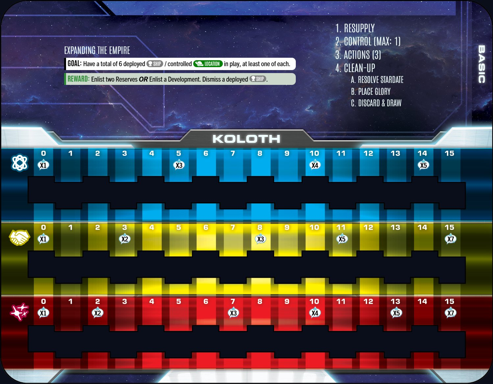
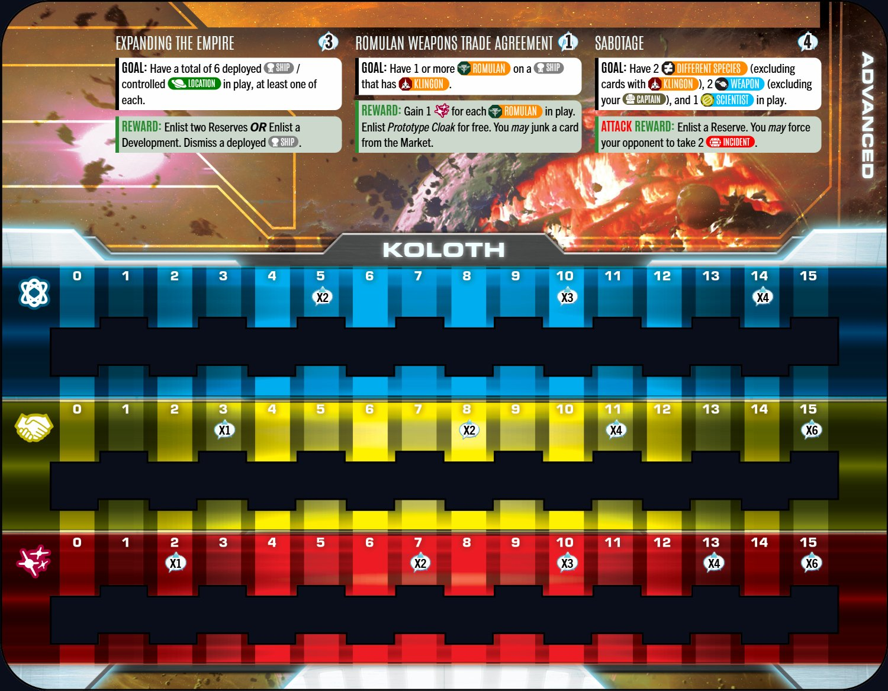
Missions
His base side mission is Expanding the Empire, which requires a total of six deployed ships or controlled locations in play, and at least one of each. This may be one of the easiest missions in the game, because you'll want to be doing this anyway. The real key will be how quickly you get it done, as your reward will be either enlisting two reserves or one development, and dismissing a deployed ship (you'll always have at least one in play per the goal requirement). It's tempting to try to get this done as soon as possible but I don't necessarily think there's a rush depending on your card draw, momentum, and Good Day to Die strategy. But more on that later. Koloth's advanced side gives you three points for Expanding the Empire.
His second mission is called Romulan Weapons Trade Agreement, which requires one or more Romulan trait on a Ship that has a Klingon trait. Completion gains you one point, and one military for each Romulan in play (not just the ones on the ship). You can Enlist Prototype Cloak for free (normally it costs three Dilithium) and you can junk a card from the market.
The final mission is called Sabotage, which requires two different species traits (excluding cards with Klingon traits), two weapon traits (excluding Koloth) and one Scientist trait in play. Koloth has four weapons and a scientist in his deck and Curzon Dax with the Trill species trait so you'll only need to find one more. However, you only get the majority of the benefits from this reward if you can finish it before you're done Enlisting, as you gain four points, Enlist a Reserve card, and you may force your opponent to take two Incidents. This is an Attack reward, so your opponent can use cards that react to an Attack to counter it.
↑ back to topCaptain Card & Starting Components
Koloth has six away teams, the Klingon and Weapon traits, and scores for Military focus. His Activation lets you put a card on top of your deck to send an away team to a Location, and your opponent may draw a card. I like this ability a lot. It doesn't cost an action token, like Sela's. It's mutually beneficial, like Shran's You Owe Me One. But drawing one card isn't that big a deal when you get the ability to send an Away Team to any neutral or controlled location. There are times I'd be wary of giving an opponent more cards, but as long as you're benefiting from the exchange with your away team, I think it's worth it (but will discuss more in the starting strategies section).
Koloth starts with the I.K.S. Gr'oth deployed. The ship with an engine room full of Tribbles, the Gr'oth has a Klingon trait, and the typical three starting Activations (dilithium for warp, discard to beam a card, and promote a Person to duty officer). The Play action is free, and deploys the ship but does not do anything else. There's also a fourth activation that costs an action token, and sends an Away Team to the I.K.S. Gr'oth's location. This is a feature of the ships in Koloth's deck, and I don't love spending an action token to send an away team when there are usually more efficient methods. Still, it's an option that sometimes makes sense.
↑ back to top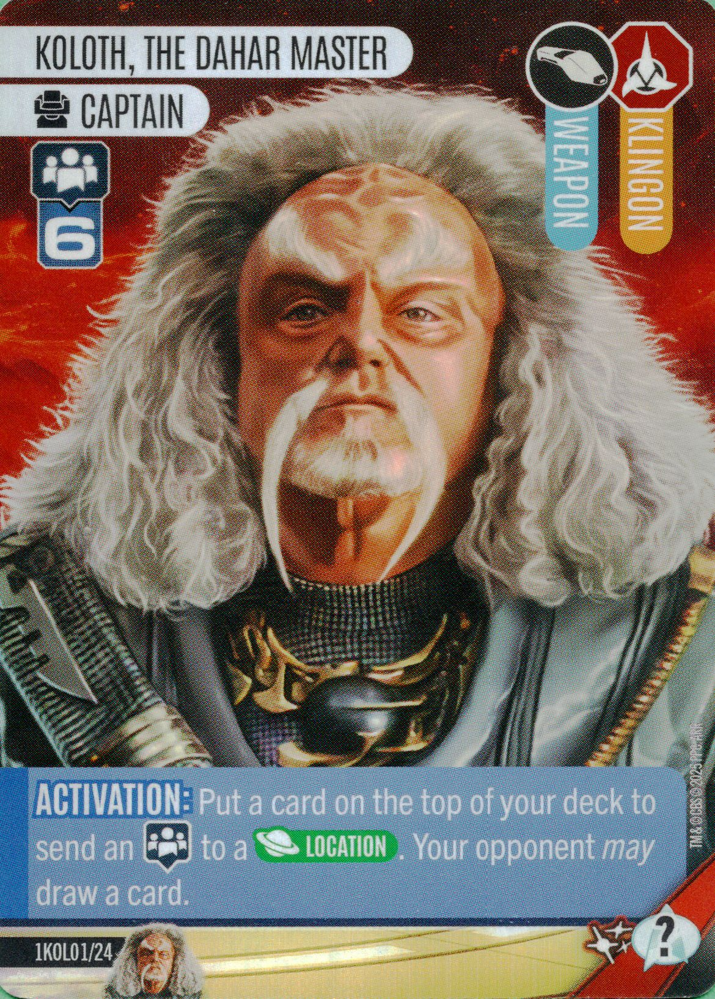
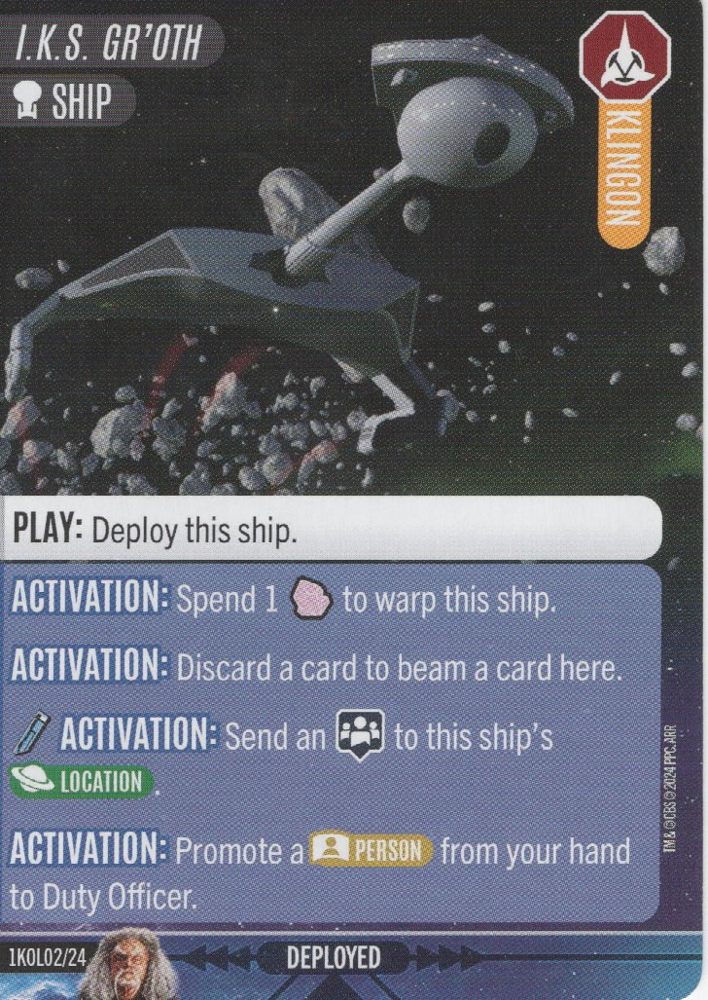
Koloth's Available Cards
Koloth has a 10 card starting hand of available cards. There are three Person cards, four directives, a cargo, a location, and a ship. I'll get into my ideal starting strategies after going over the basics of these cards and giving my thoughts.
↑ back to topQo'noS (Location)
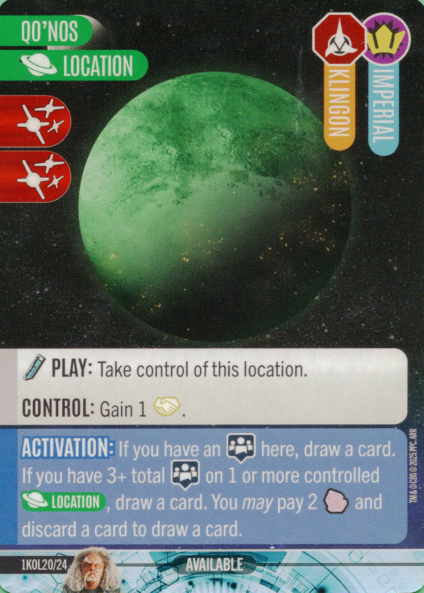
The Klingon Homeworld (which was apparently a controversial thing to say on-screen during the TNG-VOY era, per Memory Alpha) has the obvious Klingon and Imperial traits as well as two military skills. It gains one Influence upon Control, and has an unusual version of the Farpoint Station/Andoria/Bajor/Romulus Activation text. You do get to draw a card for one away team, and another if there's three or more away teams on one or more controlled locations, but you also may pay two Dilithium and discard a card to draw another card. Depending on your Dilithium stores, that's not the worst idea. I like to get Qo'nos out as soon as possible to make use of the card draw and to empty out Koloth's deck.
↑ back to topI.K.S. Klothos (Ship)
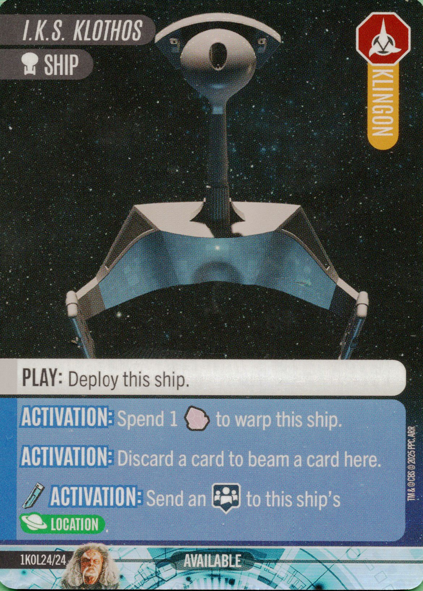
Appearing in The Original and Animated Series, the I.K.S. Klothos has Klingon trait and deploys with a free action. It has three Activation abilities. These include the standard spend one Dilithium to warp and Discard a card to Beam a card. The third Activation costs an action token and allows you to send an away team to the Klothos' location. While that can be a pretty steep cost for one away team (especially considering Koloth's ability), sometimes you have more tokens than you need or just really need to get a team out to control a location, so the flexibility is helpful.
↑ back to topKlingon Disruptors (Cargo)
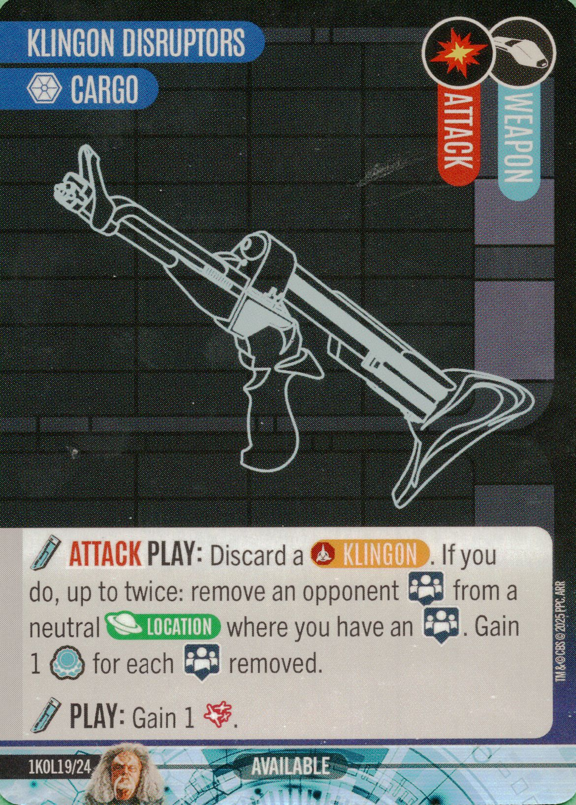
The iconic weapon of the Klingons, they have a Weapon and Attack trait and two Play Actions. The first is an attack, and requires you to discard a Klingon in order to remove, up to twice, an opponent Away Team from a location where you also have an away team, gaining Glory for each away team removed. Alternatively you can gain one Military. I find Disrupters to be a really efficient weapon, not just because you can get Away teams out easily with Koloth, but also because it pushes the game forward with Glory gain.
↑ back to topKrell (Person)
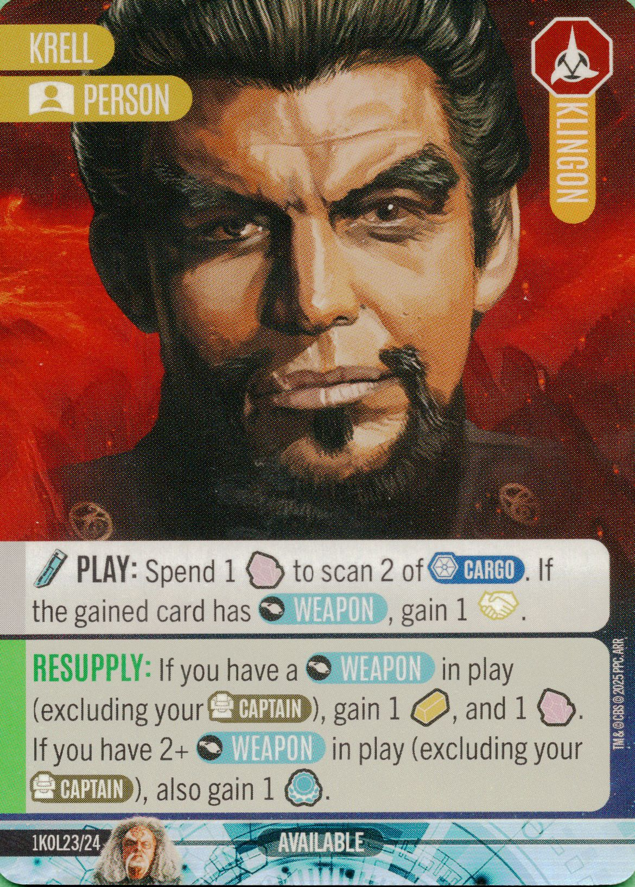
I'm not familiar with Krell's episode, "A Private Little War", but some brief reading makes his thematic ties abundantly clear. He has the Klingon trait and a play Action where you can spend one Dilithium to scan two from the Cargo deck, and if you gain a Weapon you gain an influence. This is a pretty efficient way to gain a card, with a low cost and no discarding, along with the flexibility of the scan. His Resupply action gains you a Dilithium and Latinum if you have a weapon (other than Captain Koloth) in-play, likely beamed or ongoing like Phasers. If you have two, you also gain a glory. If you decide to go heavy on using Krell the first few turns, and decide to leave some weapons in-play, this can be a useful duty officer for consistent resource gain.
↑ back to topKorax (Person)
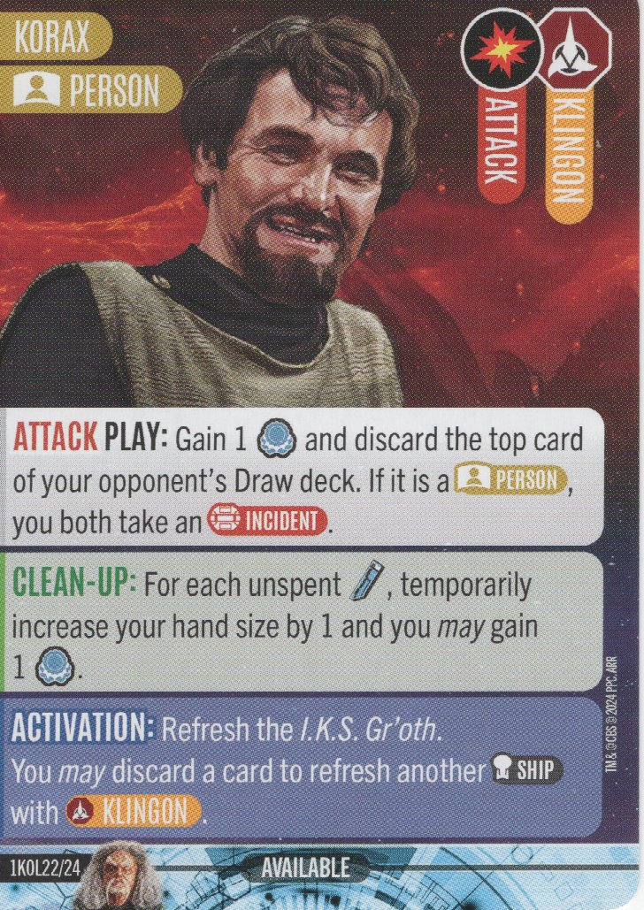
Executive officer of the Gr'oth and Devisor, Korax is known for starting fights on shore leave. He has the Attack and Klingon traits, along with a free attack Play action where he gains a glory and your opponent discards the top card of their deck. If it is a person, you both take an Incident. I kind of like how cards like Korax up the tension towards the burn in a multiplayer game. He also has an Activation that allows for a refresh of the Gr'oth, and you can refresh another Klingon ship if you discard a card. His Clean-Up ability temporarily increases your hand size by one for each unspent action token and you may take a glory for each one of those unspent tokens (which you nearly always will unless you're trying to manipulate the bot's card draw).
This is a clean-up effect, so as long as he's in the staging area or as duty officer you'll have a chance to use it. I'll be honest, I tried one game where I intentionally used Korax as a duty officer and it wasn't very effective. It's rare to have more than one unspent action token, which makes Arne Darvin just as good at increasing your hand without the need to hold on to action tokens, with the only downside being the loss of Glory for each action token. There can be some benefit to being able to refresh ships, especially if you want to beam multiple cards or warp and send away teams on the same turn, but then you're more likely to burn through action tokens rendering his Clean-Up less effective.
↑ back to topArne Darvin (Person)
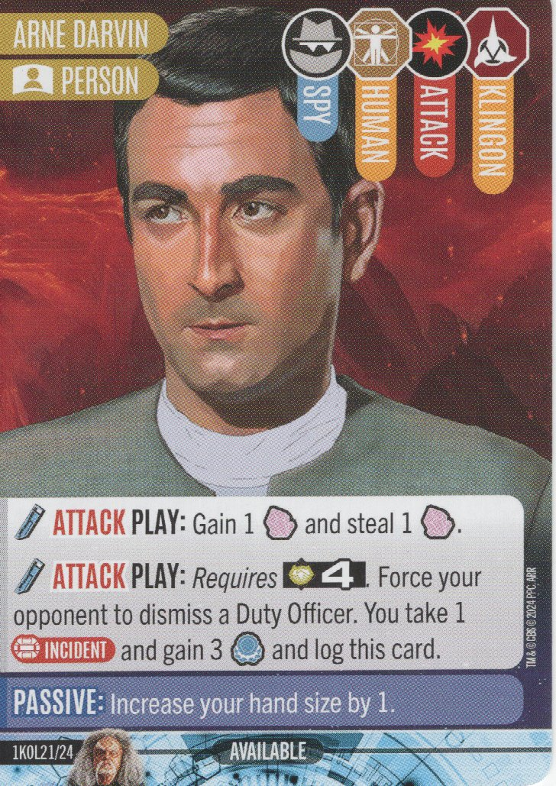
Is that Barry Waddle? Nope, it's Klingon Intelligence agent Darvin from the Trouble with Tribbles (TOS). He has a variety of traits, including Human and Klingon species traits, the Attack trait, and Spy trait. He has two Play Actions, the first of which gives him a Dilithium and steals a Dilithium. The Second requires four Influence and forces your opponent to dismiss a duty officer. You then take an Incident, gain three glory, and log this card. He also has a passive ability (common to Spy cards) that increases your hand size by one, and this is the main way I like to use him in the game.
↑ back to topGood Day To Die (Directive)
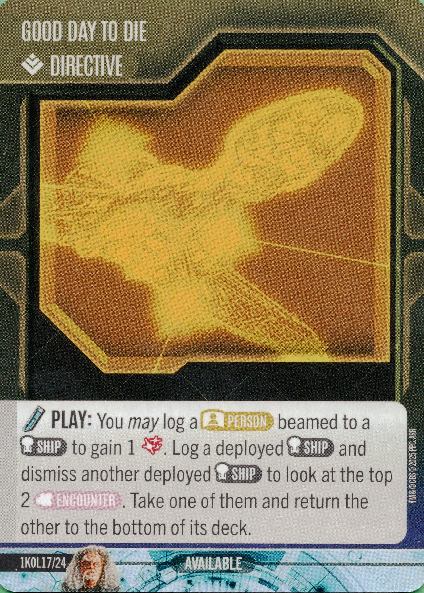
Perhaps today is a good day to die! For a Play Action, you may log a Person beamed to a ship to gain one military. Then you must log a deployed Ship and dismiss another deployed ship to look at the top two Encounters, take one, and return the other to the bottom of the Encounter deck. This is a relatively high-risk high-reward card that can often be played as early as turn one. I'll have a lot to say about whether you should do that in the next section. So far, this is a unique Directive to Koloth's deck, but I imagine as we see more Klingons it'll get used more.
↑ back to topConquer (Directive)
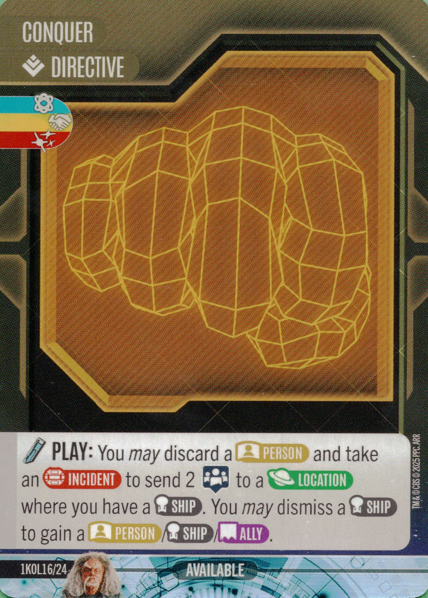
Identical to Sela's Conquer directive, you may do one or both of the Play actions on this card. The first sends two away teams where you have a ship at the cost of an Incident and discarding a Person. Then, you may dismiss a ship to gain a Person/Ship/Ally. This can be a powerful and eventful Directive, but will probably slow usage of Good Day to Die. Also, you get a wild skill tag while this card is in play, but that would mean using Conquer and Utilize on the same turn, but that's often ideal.
↑ back to topUtilize (Directive)
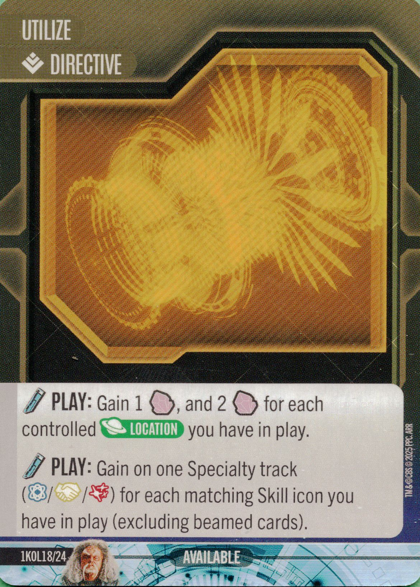
The standard Utilize Directive, there's nothing really unique here to discuss. Gain Dilithium for controlled locations or gain on one skill track.
↑ back to topConfiscate (Directive)
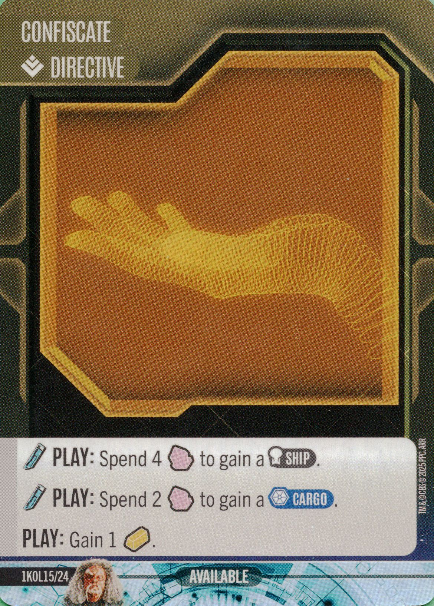
Shran also has this Directive and it is pretty straightforward. If you're flushed with Dilithium, it's probably a more reliable way to get ships than using Confiscate repeatedly, along with the flexibility of getting cargo. Koloth can really get a ton of ships if he wants to.
↑ back to topStarting Hand Strategies
Koloth's start very much depends on what Kahless chooses to bless you with in any particular moment. Let's start with the highest risk/reward play for Koloth, and that's Good Day to Die. If you have Good Day to Die and the I.K.S. Klothos in your starting hand, you can deploy the Klothos and play Good Day to Die to log Klothos, dismiss the Gr'oth, and gain your choice of the top two Encounters. Most of the encounters are pretty good for Koloth, and I'd say the only one that's really tough to do anything with early is Sha Ka Ree, because you're down to one ship and need to get some more. Everything else has some sort of early benefit apart from the points. From there you just have to figure out what makes the most sense with your remaining three cards and two action tokens. I would also recommend promoting a duty officer (if you don't need them for anything else) before initiating Good Day to Die.
If you can't or won't use Good Day to Die, the other main strategy I have is based around Conquer. You can warp your ship and get a couple away teams out there. Then, you can dismiss a ship to get another card, and I usually recommend a ship unless the Person or Ally are just too good to pass up. Again, I would probably only recommend this if the Klothos is in your hand, because you'll want to keep the Gr'oth around for promoting Duty Officers. I'd end that turn by using Koloth's ability to send an away team to either secure that location, or alternatively to Qo'nos if you have it out.
As for starting Duty Officer, I see no better choice than Arne Darvin. Yes, you can get a similar result occasionally from Korax, but you can get the same benefit from playing him and waiting for Clean-up. If you want to commit to Krell for resource generation, you can, but make sure you have Klingon Disruptors beamed to your ship and be willing to not see it for a little while.
In some pre-errata, it was suggested to me that a creative way to use Krell would be to make him Duty Officer, play Korax (for free), beam disruptors to the Klothos, and send an Away Team with Koloth. You'd spend no action tokens, your hand size would be eight for the next turn, you'd have gained four Glory (three from Korax because you get one for each action token unspent), and you'd get a Dilithum and Latinum until you get another Duty Officer. I do think this is a pretty strong play if the goal is to rush the game, and the makeup of the cards played makes Good Day to Die likely to pop-off the following turn. You can't pull this off if you only have one ship though, because there's no way to beam Klingon Disruptors to keep them in play, so this is a very specific opening hand.
Ideally and in general, you'd hope to have Qo'nos in your starting hand, which is another location I'd be quick to send an away team to via Koloth's ability. If you're nervous about giving your opponent card draw on every turn, then wait to use this ability unless you're gaining a larger net draw from it, for instance, the first away team on Qo'nos or the third on a controlled location. On the first turn, you're just getting your card back but later on it'll translate into one/two cards each turn. Really, getting lucky enough with Qo'nos will determine how much flexibility you'll have on starting cards. If you wanted to pair it with Utilize to nab three Dilithium, then you'll have the flexibility to pay for Confiscate to grab another ship. You could even beam one of the remaining cards to temporarily thin the deck, and if you know that both Good Day to Die and Klothos are in the remaining cards, you can set yourself up for a thin deck and high turnover.
In a multiplayer game where you're going second, you might decide to use Klingon Disrupters to remove some opponent away teams. This will mean a discard of a Klingon card, and for me that was most often Krell, saving Darvin for Duty officer. Alternatively, if you're focusing on control, you could promote Korax to Duty Officer, warp the Gr'oth and potentially the Klothos, and then refresh them with Korax to use their Activations to send away teams. Pair that with another Klingon card and disruptors and you have a pretty good engine.
BGG User Tony Teshera (@tonyteshera) pointed out that when playing solo, it's always worth using Koloth's activation ability. This is because it forces the bot to discard the first card off their deck, which on the first turn will always be their ship (unless you're playing Sisko). You may get into a situation where the bot doesn't deploy any ships to the neutral zone for a few rounds, depending on their card instructions. Great tip, Tony!
↑ back to topKoloth's Reserve Cards
Koloth has five Reserve cards consisting of one Directive, one Location, one Person, and two Incidents. I'll review them individually then discuss.
↑ back to topRecruit (Directive)
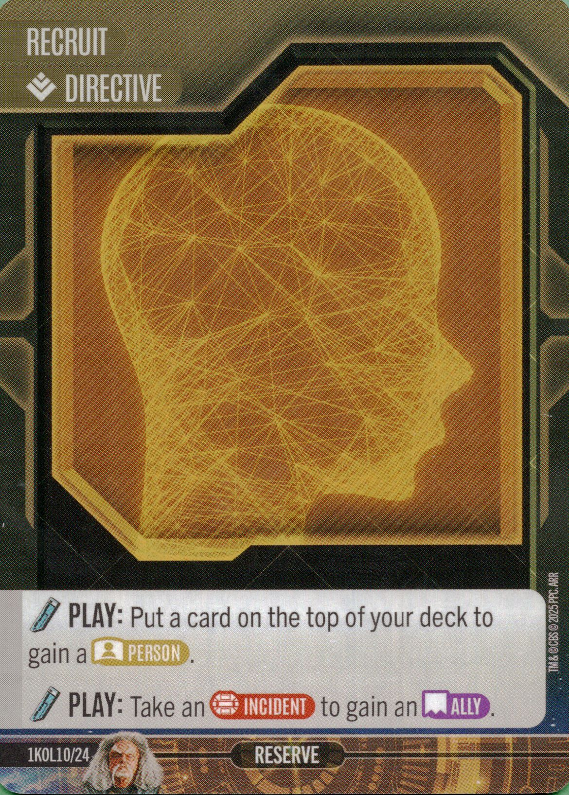
The standard Recruit Directive, it can be tough if this comes out last when it comes to flexibility. You're forced to use Conquer to gain Persons or Allies without it. Koloth's deck doesn't necessarily rely on getting more cards quickly, but it's nice to have the option.
↑ back to topRura Penthe (Location)
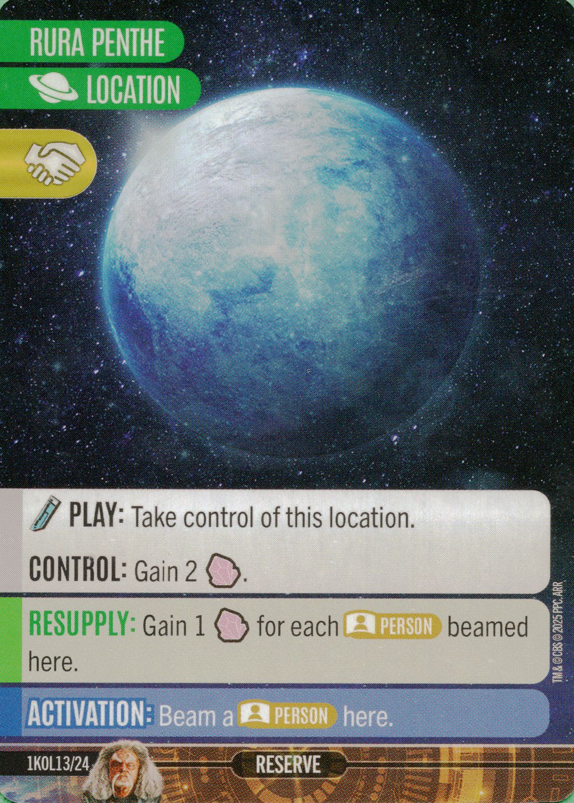
By chance, Rura Penthe has been my last or second to last Reserve card in most of my plays, and by the time I get it I don't necessarily feel the need to beam cards there. It's functionally the same as logging them (because you can't use them) but you gain the extra Dilithium and their tags stay in play. Since cards used for missions are beamed, that is the only way to get Persons back from Rura Penthe, specifically from your Sabotage mission.
↑ back to topMara (Person)
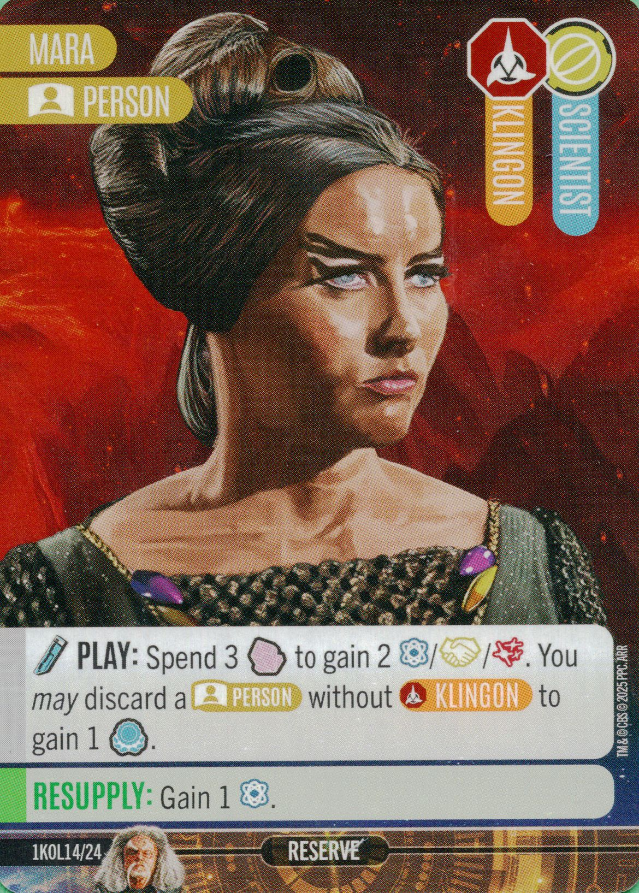
The wife of Kang (and possible mother to Dax, son of Kang), Mara was the first Klingon female onscreen and has the rare Klingon and Scientist trait combo (are there any other Klingon scientists besides Doctor K'ruvang?). Her play action lets you pay three Dilithium to move up two on any one track. You may also discard a non-Klingon Person to gain a glory, thematically representative of her helping Kirk deescalate in Day of the Dove (TOS).
↑ back to topEnergy Drain (Incident)
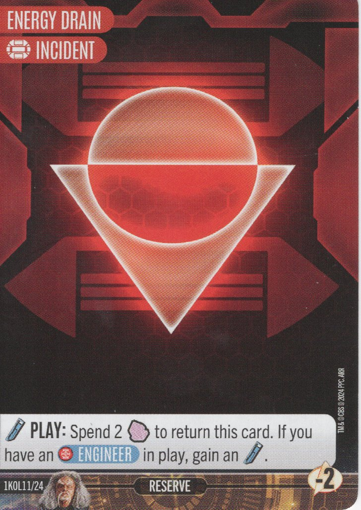
The first of Koloth's two reserve Incidents, Energy Drain is identical to the one in the Incident deck at the start of the game. Notably, Koloth does not have any Engineer traits in his deck, so returning it in an efficient manner will mean grabbing an engineer or a rare Wildcard, or just getting Curzon Dax or Kang later on.
↑ back to topHostile Contact (Incident)
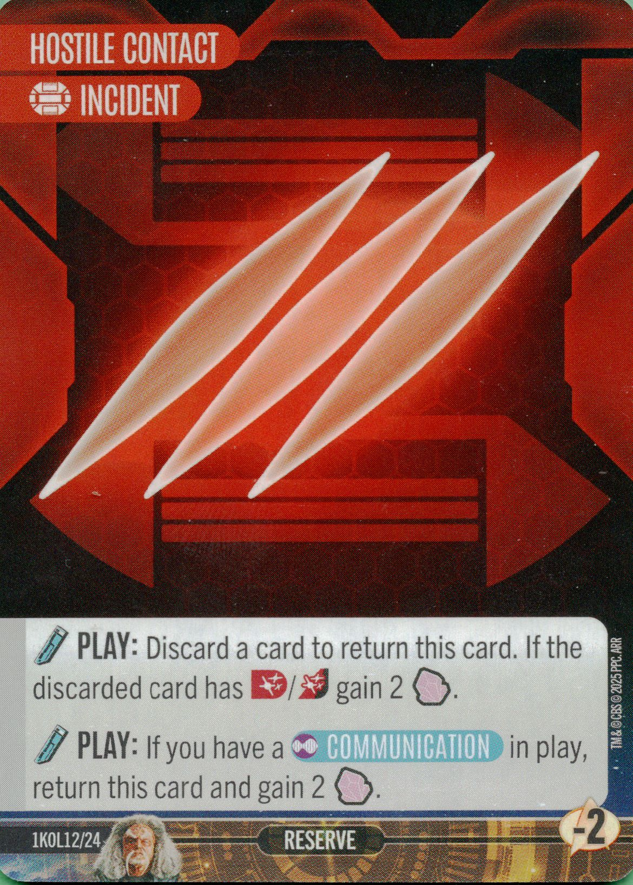
Identical to the Hostile Contact Incident in the main deck, Koloth will have to look to the market to get this one discarded, or else use Conquer's wild trait as a military skill to return it and gain some Dilithium. There's also plenty of Military Focus cards in the developments.
Koloth's reserves are kind of interesting because they're not necessarily that amazing. Mara is good and Rura Penthe can be useful, but the rest are kind of worth getting through as fast as possible. Thankfully, two of the three missions allow you to enlist some number of Reserve cards, but often you can't get the missions completed in time for it to be relevant. Thankfully, if you do burn through the Reserves, the developments are pretty fantastic.
↑ back to topKoloth's Development Cards
Koloth has seven Development cards, including three Persons, two Cargos, one location, and one ship. The costs here are a bit more unique than some decks, and require a bit more focus on gaining glory early in the game. However, they're all completely obtainable and we'll discuss what to do with them after.
↑ back to topKor, The Dahar Master (Person)
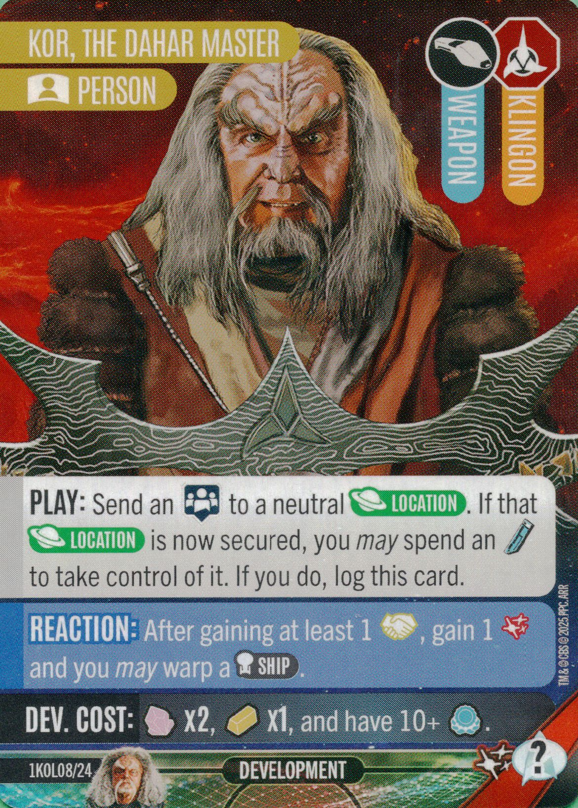
Dev Cost: 2 Dilithium, 1 Latinum, and 10+ Glory
The first of the DS9-era Developments, Kor has the Weapon and Klingon traits. He has a free Play action that sends an Away Team to a neutral location, and if it's secured you can spend an action token to take control of the location and log Kor. This is great for the last round so you can grab another location you normally wouldn't get. He has a reaction that gains you a military when you gain any amount of Influence, but I'll be honest this has never been an ideal late game play for me. His development cost requires at least ten Glory, and if you need to spend Glory to develop him, you'll need to have at least ten when you're done. He scores for Military Focus.
↑ back to topKang, The Dahar Master (Person)
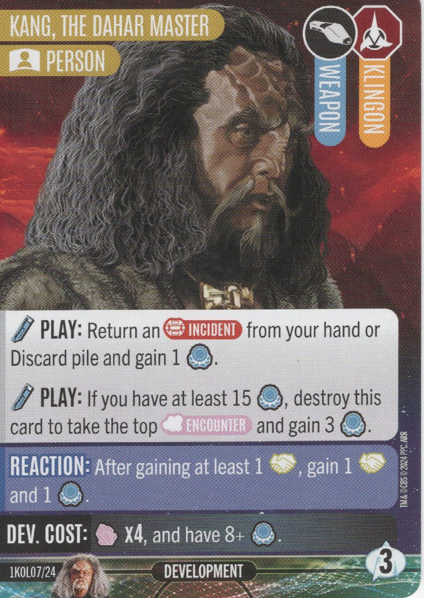
Dev Cost: 2 Dilithium and 8+ Glory
Kang and Kor both appeared in the original series as Klingon captains, but teamed up with Koloth to avenge the death of their sons. He has two Play actions, the first of which returns an Incident and gains you a Glory. The second gets you an encounter if you have at least fifteen Glory, and to make sure you can't re-use and abuse the card, you have to Destroy it and gain three Glory to make up for the three points you would have gotten at the end of the game from him. He does have a reaction similar to Kor's, where if you gain an influence, you gain another influence and a Glory. Again, I haven't found a ton of use for this late game. You do need eight Glory to enlist Kang, and he scores three points if you didn't destroy him for an Encounter first.
↑ back to topCurzon Dax (Person)
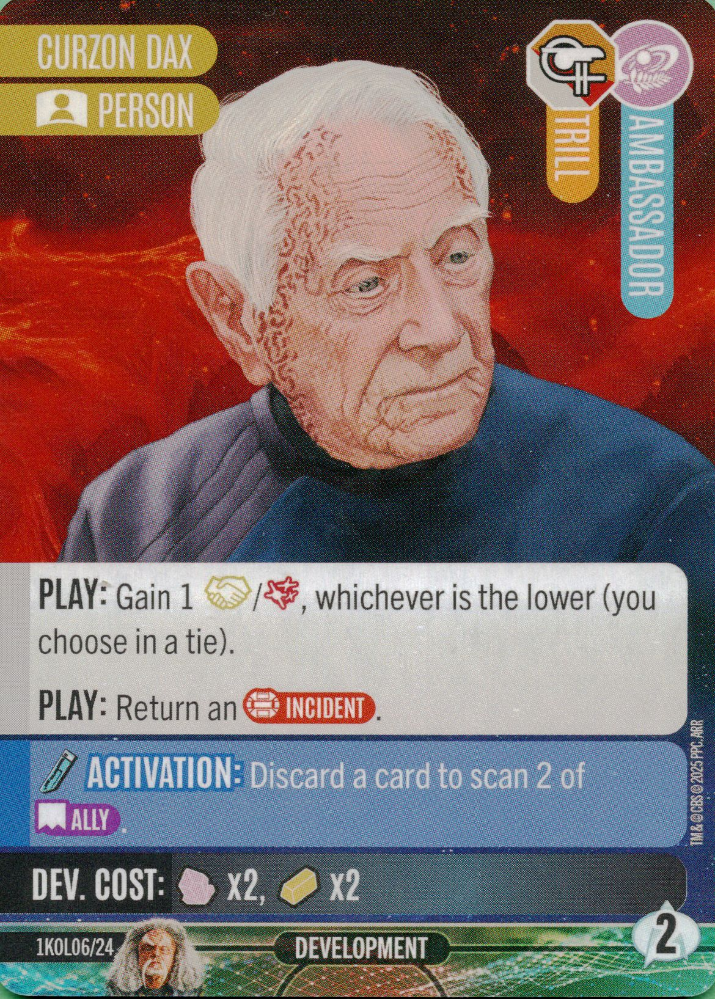
Dev Cost: 2 Dilithium and 2 Latinum
Benjamin Sisko's actual "Old Man" friend and mentor, Curzon Dax is the rare non-Klingon to have a positive relationship with the Klingon Empire in the turmoil of the late 2200s. His status as an Ambassador gives him the Trill and Ambassador traits. He has two free Play actions, the first which raises your Influence or Military, whichever is lower, and the second which returns an Incident from your hand. I like both of these, but tend to gravitate towards returning an Incident, especially if I haven't dealt with the reserve Incidents yet. He also has an activation that costs an action token and requires a discard to scan 2 from the Ally deck. He scores two points.
↑ back to topSword of Kahless (Cargo)
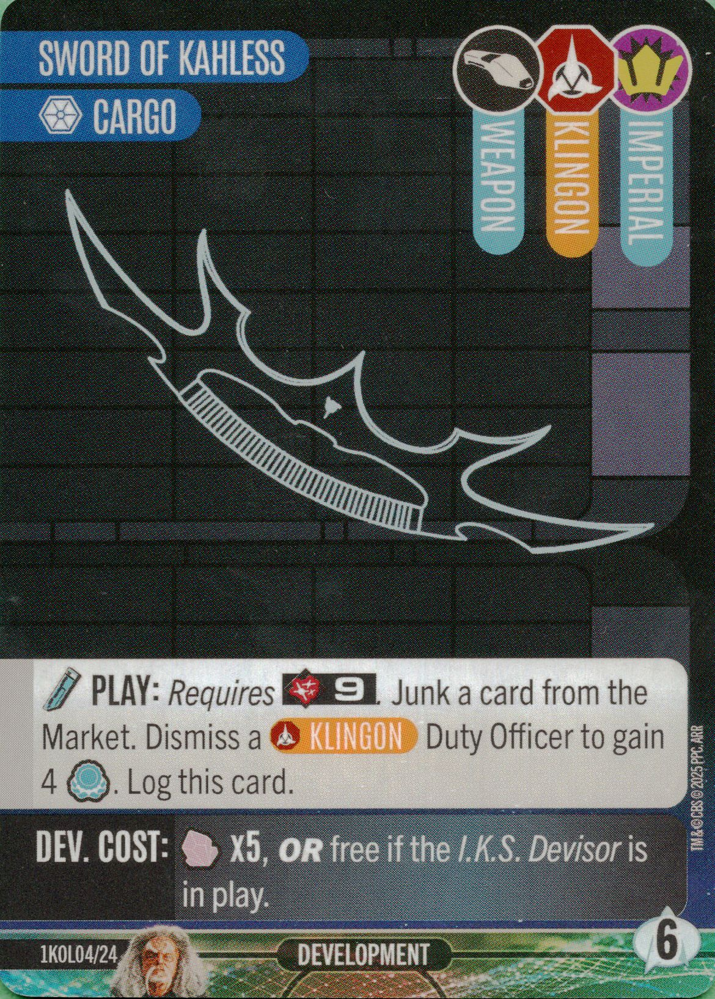
Dev Cost: 5 Dilithium, or free if the I.K.S. Devisor is in play
The legendary first bat'leth found by Worf, Jadzia, and Kor, this cargo has the weapon, Klingon, and Imperial traits. It has a Play action that requires 9 military, so until you're close to that, it's probably not worth developing. You junk a market card (this is a benefit, not a cost, so you have to do it if you can, but if you can't you can still play the card). Then dismiss a Duty Officer to gain four Glory. A good way to gain some more late-game glory for your other developments, you can also develop it for free if you have the I.K.S. Devisor first. Also, you score six points which is solid even if you can't pull off the Play action before the end of the game.
↑ back to topPrototype Cloak (Cargo)
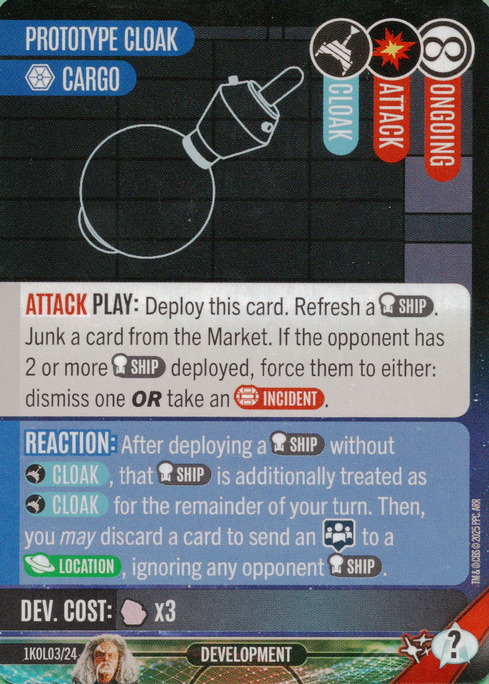
Dev Cost: 3 Dilithium, or free if you complete the Romulan Weapons Trade Agreement mission
When and how the Klingons knew how to cloak isn't exactly clear to me, as there's some conflicting canon between the original series, Discovery, and the Animated Series. But regardless, some Klingon ships had early cloaking tech, and Koloth gets a hold of it via an agreement with the Romulans (his second mission) or three Dilithium. It has three traits (Cloak, Attack, and Ongoing), and a free play action. When deployed, you'll refresh a ship, junk a market card (if you can), and you can make your opponents dismiss a ship or take an Incident, provided they have more than one ship deployed. The Reaction gains your ships the cloak trait the turn they're deployed and then you can discard a card to send an Away Team, ignoring opponent ships (the standard Cloak ability). It scores for Military Focus.
↑ back to topBoreth (Location)
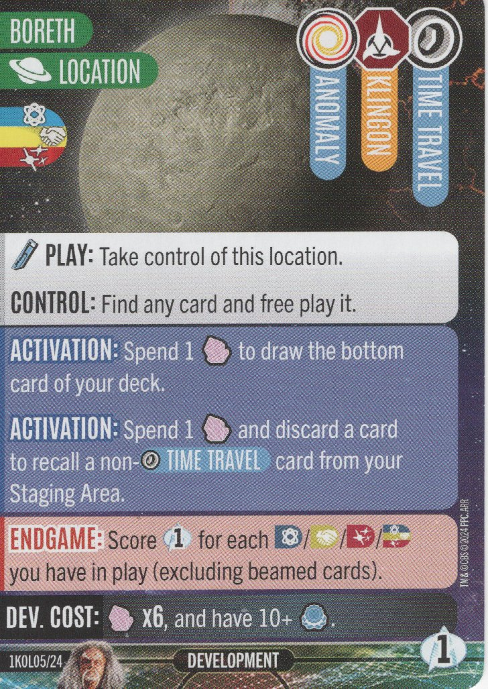
Dev Cost: 6 Dilithium and 10+ Glory
The focal point of Koloth's development deck (in my opinion), the location Boreth is home to monks guarding the spiritual legacy of Kahless. We first saw Boreth in the Next Generation when Worf goes on his spiritual journey before (a clone of) Kahless appears to him to rule the Klingon Empire. Boreth has a wild skill and the Anomaly, Klingon, and Time Travel traits, as there are also time crystals there which revealed Christopher Pike's future fate. Boreth's Control ability lets you find and free play any card, which is self-evidently awesome. There are two Activations, which both cost a dilithium. The first lets you draw the bottom card of your deck, which is fine. The second also requires you to discard a card, but lets you recall a non-time travel card from your staging area (an ability common to time travel cards). I've used this in conjunction with the Enterprise C to play Utilize three times on a single turn, and it's awesome when you can pull something like that off. Boreth scores one printed point, and another point at Endgame for each skill icon in play, which can really add up fast depending on your controlled locations (which you won't be logging since you don't have Strange New Worlds in your deck). It is rather expensive to develop and requires a decent amount of Glory, but is totally manageable in most games.
↑ back to topI.K.S. Devisor (Ship)
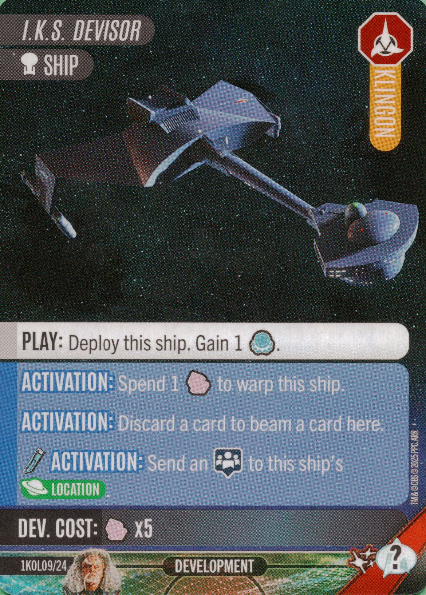
Dev Cost: 5 Dilithium
Koloth's third ship, and another from the Animated Series, this development is pretty straightforward. It deploys for free and gains Koloth a Glory. Then it can use a standard warp and beam Activation, as well as the Action token Activation that sends an Away Team to the Devisor's location. I like to get the Devisor and try to dismiss it and re-deploy as often as possible for the Glory.
As far as Development order, I do think it's important as possible to get Boreth out at some point to get those endgame points, especially if you've built up a series of locations with skills. Depending on the amount of Glory you have, or if you have more Dilithium, you might lean towards getting the Devisor or Curzon Dax to build up your Glory, Influence/Military, or get some Incidents returned. Prototype Cloak is probably best saved for when you complete your second mission, but if you haven't gotten it done and the game is winding down, it is worth considering. Likewise, getting Kor and Kang for their location control and Encounter gaining actions is pretty great. The real key is that you'll either need to be consistently gaining Glory early in the game, or you'll need to have a stockpile of Dilithium in order to avoid having to pay Glory for developments, which will make it harder to get other developments. For example, if you have seven Glory, and need to spend two along with Dilithium to get the Devisor, you'll be able to get the Sword of Kahless for free but you'll be setting yourself back on getting Boreth. This isn't a terribly hard puzzle but it's wise to think ahead.
↑ back to topNotable Market Cards
While I've touched on this in previous guides, I thought I'd start a specific section noting cards in the market that might be particularly useful for individual captains. I also thought it could be a good way of updating these guides later on for expansion market decks if necessary without having to write up another full post for each captain. I also know that this section more than any will benefit from community feedback, be it good combos people have found or simply insights I may have missed with the size of the market.
For the Person Deck, everything being situational, I find that Captain Dorg can be helpful due to his focus on other Klingon cards and weapons. Likewise, Sakonna's Play and Resupply both consider weapons in hand and Koloth would benefit from her late game at a minimum. Admiral Pressman in coordination with Prototype Cloak can yield some Glory, not to mention he'll help you play one of your many Attack cards for free. Admiral Jarok requires three military for his play action which Koloth generally has no problem achieving, and you can get your developments out quicker, though his passive ability does you no favors. Finally, I like Admiral Necheyev both for her Influence focus and the ability to warp and beam more readily.
In the Cargo Deck, you can't go wrong with any of the weapons, which includes Phasers, Type III Disruptor Pistols, and Mek'Leth (Lirpa is kind of underwhelming without a lot of Vulcans). I like grabbing any military focus cards, especially Plasma Manifold because it gives an Engineering tag and the flexibility of an additional action. Anything with Science requirements or focus scoring is probably worth ignoring, though with a couple plays of Mara, you can at least benefit from Horta and get a development from it. Same with Forced Singularity, which you would be getting for the additional Duty Officer and not for the scoring. I would also suggest getting Cloaking Device, despite its similarity to Prototype Cloak, for the focus scoring.
There really aren't that many bad ships with Koloth. While you might not score high for the Enterprise C or the Pasteur, their abilities benefit you significantly like most other captains. The Son'a Battlecruiser and D'Kty Cruiser and Xindi-Reptilian Battleship all have synergies with Koloth and the Military track or scoring. Even getting Holographic Drone Ship just to beam it and use it for your second mission isn't a bad idea.
For the Ally Deck, I'd especially suggest Tholians and Arin'sen for their resource gain. I enjoy using the Karemma for additional actions. And Letheans are often useful. I would avoid the Halkan Council (or at least junk it) if you hope to repeatedly benefit, as they will give you three Dilithium once and probably get logged from any of your many Attack cards. Finally, if you managed to get Betazoid as a starting location controlled, you may be far enough on the Influence track to benefit from the Edosians, who will at least give you some free card draw if you're not quite at five Influence.
↑ back to topPutting It All Together
Captain's Chair is essentially a race with an efficiency puzzle built into it. You want to get more points than your opponent, but you have to do it fairly quickly or they may have a chance to build an engine that earns more points than you as the game progresses. Some captains want to rush the endgame as fast as possible, others benefit from prolonging it. I believe good Koloth play leans towards a rush strategy. In order to do that, you have to have a few things set up.
The first is that you benefit from high card draw and a thinned deck. As discussed previously, this can happen via early usage of Good Day to Die, or by keeping ships deployed and having a decent amount of cards beamed to them. I personally favor the early Good Day to Die strategy, getting it in turn one if possible, turn two if not. I rely on Koloth for my away team placement, and hope that whatever I pull from the Encounter deck will be able to drive forward my strategy from that point.
The second thing you need is a good Glory engine. This may involve using Korax repeatedly early in the game instead of beaming cards. It also may require you to gain some market cards that aren't ideal but at least have Glory on them. You can get a sub-par ship (if such a thing exists) for the Glory, then log it later with Good Day to Die.
As you push through your Reserve deck, looking for opportunities to gain Glory will prepare you for developing your good developments faster, specifically Boreth. Finally, you need to have a plan for moving up the Military track by the end of the game. You don't necessarily need to be higher than six or seven for requirements (until you need nine for the Sword of Kahless), but you get a high level of scoring from your Military track at the end. The difference between scoring three points and six points may be one use of Utilize, so keep that in mind as you play Boreth (finding a free playing Utilize off Boreth is an excellent endgame strategy for multiplying your focus scoring).
Koloth needs to get lots of points from Glory, but also from Encounters and from Military focus cards, of which he has several in his developments. I think that there's some merit to fighting your opponent over locations in the neutral zone, using Klingon Disrupters to gain Glory and slow your opponents. But unless the goal is getting the Glory, I would not get in a prolonged fight over locations when you need to be controlling them for your first mission, which you want to try to complete rather quickly if you can.
If you decide to go the route of focusing on using Confiscate and Conquer to get a lot of ships early, consider getting five ships out along with Qo'nos in order to burn through your Reserve deck. I would probably suggest alternatively you not focus too hard on getting a ton of ships at once but instead cycle through your ships while gaining control of locations and taking Encounters. You can score a ton of points with Koloth if instead of rushing endgame, you make sure that you're getting a lot of locations and preventing your opponent from doing the same. But that may come with some deck bloat from the ships returning to your discard, so be advised.
In conclusion, Koloth's a really solid captain deck with a good thematic Klingon flair. He's dynamic in his attacks, and his point threshold can be very high for how fast he can complete the game. Control the Glory, regulate the endgame to stop your opponent from that last beneficial turn they were hoping for, and you'll bring glory to the Klingon Empire.
Video Playthroughs
Playthrough by Paul Grogan (Gaming Rules!) featuring Koloth: